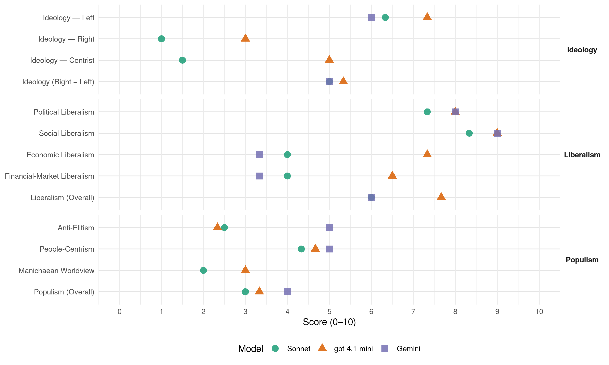

Greens (New Zealand, 2017)
manifesto_id 64110_201709
Get full text: This site shows derived annotations and short verbatim quotes only. The full manifesto text is © Manifesto Project / WZB — obtain it via manifesto-project.wzb.eu using the manifesto_id above.
Headline scores
| Dimension | Sonnet | gpt-4.1-mini | Gemini |
|---|---|---|---|
| Populism (Overall) | 3.0 | 3.3 | 4.0 |
| Anti-Elitism | 2.5 | 2.3 | 5.0 |
| People-Centrism | 4.3 | 4.7 | 5.0 |
| Manichaean Worldview | 2.0 | 3.0 | – |
| Ideology (Right − Left) | 5.0 | 5.3 | 5.0 |
| Liberalism (Overall) | 6.0 | 7.7 | 6.0 |
| Political Liberalism | 7.3 | 8.0 | 8.0 |
| Social Liberalism | 8.3 | 9.0 | 9.0 |
| Economic Liberalism | 4.0 | 7.3 | 3.3 |
| Financial-Market Liberalism | 4.0 | 6.5 | 3.3 |
Evidence per dimension
Economic Liberalism
Gemini · score 3.0 · verified · chunk 1
“Oppose trade deregulation in public goods”
replace the WTO). Oppose trade deregulation in public goods, services and utilities, and where desirable
Gemini · score 4.0 · verified · chunk 2
“promote a fair competitive environment for NZ businesses”
Key Principles Support and educate businesses to adopt sustainability as a core value. Seek to promote a fair competitive environment for NZ businesses that removes
Gemini · score 3.0 · verified · chunk 3
“raising the minimum wage to $17.75”
Safety Net welfare and tax reform policy that will make everyone who earns less than $150,000 better off than they are now. This policy also includes raising the minimum wage to $17.75 and restoring the Training Incentive Allowance
gpt-4.1-mini · score 7.0 · verified · chunk 1
“Introduce a comprehensive capital gains tax on inflation adjusted capital gains”
Introduce a comprehensive capital gains tax on inflation adjusted capital gains at the time the capital gains are realised. Exempt the family home from capital gains tax.
gpt-4.1-mini · score 8.0 · verified · chunk 2
“Support businesses to adopt sustainable certification programmes”
Supporting Sustainability Make sustainability a key goal of all business support programmes provided through government funded organisations. Support businesses to adopt sustainable certification programmes. Require all government owned enterprises to adopt sustainable procurement practices. Ensure appropriate funding for NGOs working to assist operational and behavioural change in businesses. Investigate preferential tax treatment for green technologies, low emission vehicles and other sustainable practices.
gpt-4.1-mini · score 7.0 · verified · chunk 3
“The Green Party will ensure a more balanced approach to transport funding by opening up the transport budget”
The Green Party will ensure a more balanced approach to transport funding by opening up the transport budget to invest in improving the rail network, and by increasing investment in regional roads.
Sonnet · score 4.0 · verified · chunk 1
“Oppose trade deregulation in public goods”
Oppose trade deregulation in public goods, services and utilities, and where desirable, roll back GATS commitments.
Sonnet · score 4.0 · mixed · chunk 2
“Oppose trade deregulation in public goods”
Oppose trade deregulation in public goods, services and utilities, and where desirable, roll back GATS commitments.
Sonnet · score 4.0 · verified · chunk 3
“Raise the minimum wage to $17.75”
Raise the minimum wage to $17.75 in the first year and keep raising it until it’s 66 percent of the average wage.
Financial-Market Liberalism
Gemini · score 2.0 · verified · chunk 1
“tax on international currency movements”
working to agree on a tax on international currency movements, to set up a fund to provide
Gemini · score 3.0 · verified · chunk 2
“strengthen Kiwibank so it can properly compete”
We’ve got a plan to change that. We’d strengthen Kiwibank so it can properly compete with the big four Aussie banks, and drive them to cut lending rates
Gemini · score 5.0 · verified · chunk 3
“long-term partially-guaranteed housing bonds to investors”
housing crisis. We’ll fund these by supplying long-term partially-guaranteed housing bonds to investors who want to see their money put to use
gpt-4.1-mini · score 6.0 · verified · chunk 1
“Require all international treaties to be voted on in Parliament before being signed”
Require all international treaties to be voted on in Parliament before being signed, must give full effect to our Treaty of Waitangi obligations, and must put the rights of peoples and governments before those of multinational company investors.
gpt-4.1-mini · score 7.0 · verified · chunk 2
“Inject a further $100 million of capital in Kiwibank to speed its expansion into commercial banking”
To achieve better bank interest rates, the Green Party will: Inject a further $100 million of capital in Kiwibank to speed its expansion into commercial banking; Allow Kiwibank to keep more of its profits to help it grow faster; and, Give Kiwibank a clear public purpose to lead the market in passing on interest rate cuts.
Sonnet · score 3.0 · verified · chunk 1
“tax on international currency movements”
Join the group of countries working to agree on a tax on international currency movements, to set up a fund to provide capital for poor countries
Sonnet · score 4.0 · verified · chunk 2
“strengthen Kiwibank so it can properly compete”
We’d strengthen Kiwibank so it can properly compete with the big four Aussie banks, and drive them to cut lending rates for all of us.
Sonnet · score 5.0 · verified · chunk 3
“low-interest loans to community housing providers”
the government will issue low-interest loans to community housing providers to build new, energy efficient homes. We’ll fund these by supplying long-term partially-guaranteed housing bonds to investors
Political Liberalism
Gemini · score 8.0 · verified · chunk 1
“maintenance of effective democracy”
independent media that contributes to the maintenance of effective democracy and Aotearoa New Zealand’s
Gemini · score 8.0 · verified · chunk 2
“Government and democracy must be clean, transparent and fair”
Open Government and Democracy Policy Government and democracy must be clean, transparent and fair. New Zealanders have the right to information
Gemini · score 8.0 · verified · chunk 3
“critical to our democracy and our national identity”
watching stories about New Zealanders, by New Zealanders, is critical to our democracy and our national identity. Traditional media are facing financial
gpt-4.1-mini · score 8.0 · verified · chunk 1
“Support Mixed Member Proportional (MMP)”
Support Mixed Member Proportional (MMP) . Support a fixed election date Official Information Act Ensure the Ombudsman has the resources needed to respond to all OIA complaints in a reasonable timeframe, and greater powers to censure agencies for non-compliance or lack of co-operation.
gpt-4.1-mini · score 8.0 · verified · chunk 2
“Support Mixed Member Proportional (MMP) . Support a fixed election date”
Electoral Reform Maori fairly and effectively represented in Parliament through guaranteed representation Support Mixed Member Proportional (MMP) . Support a fixed election date Official Information Act Ensure the Ombudsman has the resources needed to respond to all OIA complaints in a reasonable timeframe, and greater powers to censure agencies for non-compliance or lack of co-operation Support legal responsibilities and penalties for public servants to keep good records and ensure staff training on proper implementation of OIA Lobbyists Introduce a statutory register of lobbyists Introduce guidelines for MPs on handling lobbying communications Election Financing Initiate a review of the overall operation of campaign finance rules, including rules around donations and spending caps and non-political party election activities Introduce tigher limits on anonymous donations, place an annual limit of $35,000 on total donations from any single person or entity, and introduce a ban on overseas donations Local Government Require Local Government to publish all resource consent applications and decisions, council minutes and order papers, and video of all council meetings and committee meetings Introduce a pecuniary interests register for councillors, similar to that used in parliament, and the source of all campaign donations over $500
gpt-4.1-mini · score 8.0 · verified · chunk 3
“The Green Party will increase education funding by $315 million”
The Green Party is passionate about improving inclusive education services so that every Kiwi kid gets to fully participate in school life. In government, the Green Party will increase education funding by $315 million to build a more inclusive education system.
Sonnet · score 8.0 · verified · chunk 1
“transparent, inclusive and consensus-based decision-making”
Aotearoa New Zealand exemplifies transparent, inclusive and consensus-based decision-making based on Te Tiriti o Waitangi and Maori are able to exercise tino rangatiratanga.
Sonnet · score 7.0 · verified · chunk 2
“Government and democracy must be clean, transparent”
Government and democracy must be clean, transparent and fair. New Zealanders have the right to information used to make decisions that affect their lives.
Sonnet · score 7.0 · verified · chunk 3
“critical to our democracy and our national identity”
Reading, hearing, and watching stories about New Zealanders, by New Zealanders, is critical to our democracy and our national identity. Traditional media are facing financial and technological disruption.
Liberalism (Overall)
Gemini · score 6.0 · verified · chunk 1
“maintenance of effective democracy”
independent media that contributes to the maintenance of effective democracy and Aotearoa New Zealand’s
Gemini · score 6.0 · verified · chunk 2
“Government and democracy must be clean, transparent and fair”
Open Government and Democracy Policy Government and democracy must be clean, transparent and fair. New Zealanders have the right to information
Gemini · score 6.0 · verified · chunk 3
“critical to our democracy and our national identity”
watching stories about New Zealanders, by New Zealanders, is critical to our democracy and our national identity. Traditional media are facing financial
gpt-4.1-mini · score 8.0 · verified · chunk 1
“Support Mixed Member Proportional (MMP)”
Support Mixed Member Proportional (MMP) . Support a fixed election date Official Information Act Ensure the Ombudsman has the resources needed to respond to all OIA complaints in a reasonable timeframe, and greater powers to censure agencies for non-compliance or lack of co-operation.
gpt-4.1-mini · score 8.0 · verified · chunk 2
“Support Mixed Member Proportional (MMP) . Support a fixed election date”
Electoral Reform Maori fairly and effectively represented in Parliament through guaranteed representation Support Mixed Member Proportional (MMP) . Support a fixed election date Official Information Act Ensure the Ombudsman has the resources needed to respond to all OIA complaints in a reasonable timeframe, and greater powers to censure agencies for non-compliance or lack of co-operation Support legal responsibilities and penalties for public servants to keep good records and ensure staff training on proper implementation of OIA Lobbyists Introduce a statutory register of lobbyists Introduce guidelines for MPs on handling lobbying communications Election Financing Initiate a review of the overall operation of campaign finance rules, including rules around donations and spending caps and non-political party election activities Introduce tigher limits on anonymous donations, place an annual limit of $35,000 on total donations from any single person or entity, and introduce a ban on overseas donations Local Government Require Local Government to publish all resource consent applications and decisions, council minutes and order papers, and video of all council meetings and committee meetings Introduce a pecuniary interests register for councillors, similar to that used in parliament, and the source of all campaign donations over $500
gpt-4.1-mini · score 7.0 · verified · chunk 3
“The Green Party will make life better for the thousands of New Zealanders who rent their homes”
The Green Party will make life better for the thousands of New Zealanders who rent their homes. Our plan will bring balance to the landlord-tenant relationship, improve rental security for tenants, and make sure that all homes are warm, dry and healthy.
Sonnet · score 6.0 · verified · chunk 1
“opposed to any discrimination on the grounds of ethnicity”
We stand opposed to any discrimination on the grounds of ethnicity, gender, political belief, sexuality, marital status, age, disability or socio-economic background.
Sonnet · score 6.0 · verified · chunk 2
“Government and democracy must be clean, transparent”
Government and democracy must be clean, transparent and fair. New Zealanders have the right to information used to make decisions that affect their lives.
Sonnet · score 6.0 · verified · chunk 3
“first country to have pay equity for women”
New Zealand was the first country where women won the right to vote, and now we can be the first country to have pay equity for women.
Anti-Elitism
Gemini · score 5.0 · verified · chunk 2
“cleaning up politics to ensure the influence of money”
engage as citizens in our democracy. This means cleaning up politics to ensure the influence of money is not allowed to distort our democratic system.
gpt-4.1-mini · score 2.0 · verified · chunk 1
“Require all international treaties to be voted on in Parliament before being signed”
Require all international treaties to be voted on in Parliament before being signed, must give full effect to our Treaty of Waitangi obligations, and must put the rights of peoples and governments before those of multinational company investors.
gpt-4.1-mini · score 3.0 · verified · chunk 2
“cleaning up politics to ensure the influence of money is not allowed to distort our democratic system”
Government and democracy must be clean, transparent and fair. New Zealanders have the right to information used to make decisions that affect their lives, so we must make it easier for people to actively engage as citizens in our democracy. This means cleaning up politics to ensure the influence of money is not allowed to distort our democratic system. It also means increasing transparency, so New Zealanders know what is going on and who is influencing the decision-makers.
gpt-4.1-mini · score 2.0 · verified · chunk 3
“The Green Party’s plan will ensure the people on the highest incomes pay their fair share”
The Green Party’s plan will ensure the people on the highest incomes pay their fair share and those that need help are treated with respect and dignity.
Sonnet · score 3.0 · mixed · chunk 1
“tax cuts for the rich over maintaining”
National has prioritised new motorways and tax cuts for the rich over maintaining the capacity of health services.
Sonnet · score 3.0 · verified · chunk 2
“big four Aussie-owned banks leaving them free”
National Government has limited Kiwibank’s ability to compete with the big four Aussie-owned banks leaving them free to make unnecessarily large profits off Kiwi households and businesses.
Sonnet · score 2.0 · verified · chunk 3
“National has also made a number of negative changes”
The Government has made it harder for graduates to get into their first home by failing to act quickly to stop the housing crisis. National has also made a number of negative changes that have made it harder for the hundreds of thousands of New Zealanders with Student Loans to save
Ideology — Centrist
gpt-4.1-mini · score 5.0 · verified · chunk 1
“Tangata whenua have a partnership role in determining Aotearoa New Zealand’s immigration policy”
Treat all migrants with dignity, compassion, and respect in accordance with international conventions on human rights. Ensure that new immigrants are welcomed and included in Aotearoa New Zealand society. Tangata whenua have a partnership role in determining Aotearoa New Zealand’s immigration policy.
gpt-4.1-mini · score 5.0 · verified · chunk 2
“Decisions should be taken at the level closest to the citizens, town, city or region”
Decisions should be taken at the level closest to the citizens, town, city or region and only those tasks that the local level cannot effectively carry out alone should be referred to higher levels. Local and central government should recognise that they are distinctive but interrelated and inter-dependent spheres of government and work together to promote the best outcomes for communities and the environment.
gpt-4.1-mini · score 5.0 · verified · chunk 3
“The Green Party’s plan will ensure the people on the highest incomes pay their fair share”
The Green Party’s plan will ensure the people on the highest incomes pay their fair share and those that need help are treated with respect and dignity.
Sonnet · score 2.0 · mixed · chunk 1
“everyone deserves a fair go”
We oppose discrimination on the basis of nationality, ethnic origin, religion, political belief, gender, sexuality, marital status, family, age, disability, or socio-economic background. We believe that everyone deserves a fair go.
Sonnet · score 2.0 · verified · chunk 2
“Government and democracy must be clean, transparent”
Government and democracy must be clean, transparent and fair.
Sonnet · score 1.0 · verified · chunk 3
“New Zealanders deserve more transparency”
New Zealanders deserve more transparency from their politicians so they can better engage in the political system.
Ideology — Left
Gemini · score 6.0 · verified · chunk 2
“doesn’t sacrifice our sovereignty to multinational giants”
Fair trade is a shared pathway towards greater global prosperity—one that doesn’t sacrifice our sovereignty to multinational giants.
gpt-4.1-mini · score 7.0 · verified · chunk 1
“Introduce a comprehensive capital gains tax on inflation adjusted capital gains”
Introduce a comprehensive capital gains tax on inflation adjusted capital gains at the time the capital gains are realised. Exempt the family home from capital gains tax.
gpt-4.1-mini · score 7.0 · verified · chunk 2
“Shift tax from work and enterprise onto pollution and wasted resources”
Increase the minimum wage and ensure it cannot fall below 66% of the average wage. Shift tax from work and enterprise onto pollution and wasted resources. Ensure government policy recognises the contribution of unpaid work to society and the economy, including the work of parents and caregivers.
gpt-4.1-mini · score 8.0 · verified · chunk 3
“Increase all core benefits by 20 percent Increase the amount people can earn before their benefit is cut”
The Green Party will repair the holes that have been torn in New Zealand’s social safety net by making major changes to income support – changes that will bring people out of poverty and provide independence, dignity, and choices. We will: Increase all core benefits by 20 percent Increase the amount people can earn before their benefit is cut Increase the value of Working For Families for all families
Sonnet · score 6.0 · verified · chunk 1
“strongly progressive tax system, raising the minimum wage”
We will create a fairer, more equal society through a strongly progressive tax system, raising the minimum wage, and by building more state houses.
Sonnet · score 6.0 · verified · chunk 2
“end poverty and create an inclusive Aotearoa”
The goals of our plan are: To make New Zealand a world leader in the global fight against climate change. To restore and replenish our forests, our birds and our rivers. To end poverty and create an inclusive Aotearoa.
Sonnet · score 7.0 · verified · chunk 3
“Increase all core benefits by 20 percent”
We will: Increase all core benefits by 20 percent Increase the amount people can earn before their benefit is cut Increase the value of Working For Families for all families
Ideology (Right − Left)
Gemini · score 5.0 · verified · chunk 2
“doesn’t sacrifice our sovereignty to multinational giants”
Fair trade is a shared pathway towards greater global prosperity—one that doesn’t sacrifice our sovereignty to multinational giants.
gpt-4.1-mini · score 5.0 · verified · chunk 1
“Require all international treaties to be voted on in Parliament before being signed”
Require all international treaties to be voted on in Parliament before being signed, must give full effect to our Treaty of Waitangi obligations, and must put the rights of peoples and governments before those of multinational company investors.
gpt-4.1-mini · score 5.0 · verified · chunk 2
“cleaning up politics to ensure the influence of money is not allowed to distort our democratic system”
Government and democracy must be clean, transparent and fair. New Zealanders have the right to information used to make decisions that affect their lives, so we must make it easier for people to actively engage as citizens in our democracy. This means cleaning up politics to ensure the influence of money is not allowed to distort our democratic system. It also means increasing transparency, so New Zealanders know what is going on and who is influencing the decision-makers.
gpt-4.1-mini · score 6.0 · verified · chunk 3
“The Green Party will repair the holes that have been torn in New Zealand’s social safety net”
The Green Party will repair the holes that have been torn in New Zealand’s social safety net by making major changes to income support – changes that will bring people out of poverty and provide independence, dignity, and choices.
Sonnet · score 5.0 · verified · chunk 1
“strongly progressive tax system, raising the minimum wage”
We will create a fairer, more equal society through a strongly progressive tax system, raising the minimum wage, and by building more state houses.
Sonnet · score 4.0 · verified · chunk 2
“end poverty and create an inclusive Aotearoa”
The goals of our plan are: To make New Zealand a world leader in the global fight against climate change. To restore and replenish our forests, our birds and our rivers. To end poverty and create an inclusive Aotearoa.
Sonnet · score 6.0 · verified · chunk 3
“Introduce a new top tax rate of 40 percent”
Introduce a new top tax rate of 40 percent on income over $150,000 per year. Raise the minimum wage to $17.75 in the first year
Ideology — Right
gpt-4.1-mini · score 3.0 · verified · chunk 1
“Allow only New Zealand citizens and residents to buy NZ land”
Support NZ businesses by committing to Government procurement of local goods and services wherever we can. Allow only New Zealand citizens and residents to buy NZ land.
gpt-4.1-mini · score 3.0 · verified · chunk 2
“Ownership of land in Aotearoa/ New Zealand is a privilege that should be for citizens and permanent residents only”
We support fair trade, which is free trade that respects human rights and looks after the planet. Fair trade upholds environmental standards that will protect and restore the biodiversity and biosecurity of our planet. We seek trade solutions that promote sustainable forms of development and protect overseas workers from exploitation. Fair trade is a shared pathway towards greater global prosperity—one that doesn’t sacrifice our sovereignty to multinational giants. Ownership of land in Aotearoa/ New Zealand is a privilege that should be for citizens and permanent residents only We welcome new investment that creates jobs in sustainable enterprises.
Sonnet · score 1.0 · verified · chunk 1
“Allow only New Zealand citizens and residents”
Allow only New Zealand citizens and residents to buy NZ land.
Sonnet · score 1.0 · verified · chunk 2
“Land ownership for New Zealand citizens”
Investment safeguards Land ownership for New Zealand citizens and permanent residents only.
Sonnet · score 1.0 · verified · chunk 3
“Progressively increase New Zealand’s refugee quota”
The Green Party will: Progressively increase New Zealand’s refugee quota to 4,000 people per year after six years, and properly fund asylum seeker and refugee services.
Manichaean Worldview
gpt-4.1-mini · score 2.0 · verified · chunk 1
“Oppose New Zealand involvement in United States-led coalition military operations in Iraq and Afghanistan”
Oppose New Zealand involvement in United States-led coalition military operations in Iraq and Afghanistan (but support UN peace-building there); and oppose any intelligence assistance to these wars by closing down the satellite communications interception station at Waihopai.
gpt-4.1-mini · score 4.0 · verified · chunk 2
“We’ll work to stop our intelligence agencies spying on legitimate, peaceful, political dissenters”
Security Services Summary We’ll work to stop our intelligence agencies spying on legitimate, peaceful, political dissenters We support an inquiry as to whether the SIS should be abolished and responsibility for detecting politically motivated crime returned to the Police.
Sonnet · score 2.0 · mixed · chunk 1
“exploitation of finite resources for short term profit”
Our Environment Policy protects New Zealand’s natural heritage from exploitation of finite resources for short term profit, such as industrial dairying & open-cast mining.
Sonnet · score 2.0 · verified · chunk 2
“National hasn’t shown this leadership”
For manufacturing to thrive and take advantage of new technologies like 3D printing, we need leadership across the whole sector now. National hasn’t shown this leadership.
Sonnet · score 2.0 · verified · chunk 3
“archiac, cruel laws”
so those suffering don’t risk jail for no reason other than archiac, cruel laws. Going down a pharmaceutical route is going to price cannabis out of people’s hands.
People-Centrism
Gemini · score 5.0 · verified · chunk 2
“New Zealanders have the right to information”
Government and democracy must be clean, transparent and fair. New Zealanders have the right to information used to make decisions that affect their lives
gpt-4.1-mini · score 3.0 · verified · chunk 1
“Tangata whenua have a partnership role in determining Aotearoa New Zealand’s immigration policy”
Treat all migrants with dignity, compassion, and respect in accordance with international conventions on human rights. Ensure that new immigrants are welcomed and included in Aotearoa New Zealand society. Tangata whenua have a partnership role in determining Aotearoa New Zealand’s immigration policy.
gpt-4.1-mini · score 5.0 · verified · chunk 2
“The Green Party envisions a nation where Te Tiriti o Waitangi is accepted and celebrated as a founding document”
The Green Party envisions a nation where Te Tiriti o Waitangi is accepted and celebrated as a founding document of Aotearoa New Zealand, the status of Māori as tangata whenua is recognised and respected, and the many dynamic aspects of Māori life and culture are enhanced for the benefit of us all.
gpt-4.1-mini · score 6.0 · verified · chunk 3
“Everyone who earns less than $150,000 a year will be better off”
The Green Party’s plan will ensure the people on the highest incomes pay their fair share and those that need help are treated with respect and dignity. Everyone who earns less than $150,000 a year will be better off.
Sonnet · score 4.0 · verified · chunk 1
“improve the quality of life of all New Zealanders”
A Green economy will improve the quality of life of all New Zealanders by growing our reputation as a producer of high value, clean green products
Sonnet · score 4.0 · verified · chunk 2
“We love Aotearoa New Zealand, and we want”
We love Aotearoa New Zealand, and we want to look after it and all of its people.
Sonnet · score 5.0 · verified · chunk 3
“every single Kiwi kid to have a great start”
We want every single Kiwi kid to have a great start in life – regardless of what their parents earn or whether they work or not.
Populism (Overall)
Gemini · score 4.0 · verified · chunk 2
“cleaning up politics to ensure the influence of money”
engage as citizens in our democracy. This means cleaning up politics to ensure the influence of money is not allowed to distort our democratic system.
gpt-4.1-mini · score 2.0 · verified · chunk 1
“Require all international treaties to be voted on in Parliament before being signed”
Require all international treaties to be voted on in Parliament before being signed, must give full effect to our Treaty of Waitangi obligations, and must put the rights of peoples and governments before those of multinational company investors.
gpt-4.1-mini · score 4.0 · verified · chunk 2
“cleaning up politics to ensure the influence of money is not allowed to distort our democratic system”
Government and democracy must be clean, transparent and fair. New Zealanders have the right to information used to make decisions that affect their lives, so we must make it easier for people to actively engage as citizens in our democracy. This means cleaning up politics to ensure the influence of money is not allowed to distort our democratic system. It also means increasing transparency, so New Zealanders know what is going on and who is influencing the decision-makers.
gpt-4.1-mini · score 4.0 · verified · chunk 3
“The Green Party’s plan will ensure the people on the highest incomes pay their fair share”
The Green Party’s plan will ensure the people on the highest incomes pay their fair share and those that need help are treated with respect and dignity.
Sonnet · score 3.0 · mixed · chunk 1
“tax cuts for the rich over maintaining”
National has prioritised new motorways and tax cuts for the rich over maintaining the capacity of health services.
Sonnet · score 3.0 · verified · chunk 2
“big four Aussie-owned banks leaving them free”
National Government has limited Kiwibank’s ability to compete with the big four Aussie-owned banks leaving them free to make unnecessarily large profits off Kiwi households and businesses.
Sonnet · score 3.0 · verified · chunk 3
“every single Kiwi kid to have a great start”
We want every single Kiwi kid to have a great start in life – regardless of what their parents earn or whether they work or not.
Social Liberalism